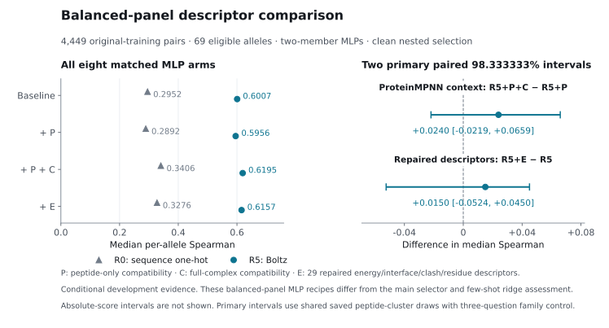

logic binders · London AI × Science · updated 13 October 2026
Antigen Presentation Stability:
What do frozen interfaces add?
A source-backed assessment of peptide–HLA stability ranking. Interface embeddings improve development ranking, and few-shot adaptation improves strict joint development ranking. Ranking loss, the tested tree hybrids and ProteinMPNN/FoldX descriptors add no established benefit beyond matched Boltz heads. Verified cached-feature prediction heads are ready; independent confirmation remains open.
The task
Stability is different from affinity.
- Stability — how long it stays bound
- t½ = ln 2 / koff
- Affinity — how readily it binds
- Kd = koff / kon
Audited round 2 · 12 October 2026 · development evidence
Frozen interface embeddings add useful ranking information.
In peptide-cluster holdout, the prespecified embedding-or-original selector improves on a competitive sequence selector. Independent confirmation remains open.
Primary paired difference in Spearman
+0.054322
95% interval [+0.031395, +0.080805]
The lower bound is above zero, but below +0.05. The prespecified worthwhile-gain criterion is not met.
Embedding selector 0.721163 · competitive sequence selector 0.666841.
- Original training rows
- 19,716
- Peptide clusters
- 3,587
- HLA alleles
- 75
- Outer folds
- 5
- Primary eligible panel
- 69 alleles
Main assessment · Saved paired comparisons · Completion audit
Declared procedures and matched controls
Scores describe declared procedures; the highest component score does not select a new winner. The inner selector retained the original fallback and chose R5 MLP in four folds and R4 ridge in one.
| Procedure | Score |
|---|---|
| Original 30-member sequence MLP | 0.661522 |
| Competitive sequence selector | 0.666841 |
| R2 chain-mean MLP | 0.421852 |
| R4 position-aware ridge | 0.684510 |
| R4 position-aware MLP | 0.713592 |
| R5 contact-pooled MLP | 0.720986 |
| R5 shuffled-membership MLP | 0.720310 |
| Full 9×34 positional MLP | 0.731541 |
| Prespecified embedding-or-original selector | 0.721163 |
| Declared contrast | Difference [95% interval] |
|---|---|
| Retain R3 token positions vs. matched tiled pooling | +0.338713 [+0.302942, +0.377253] |
| Retain full 9×34 positions vs. matched pooling | +0.166349 [+0.137791, +0.199165] |
| Crystal contact membership vs. shuffled membership | +0.000676 [−0.009556, +0.023590] |
Positions help within these frozen compressed representations. The particular crystal-derived contact membership has no established benefit. Weak chain averages do not reject internal embeddings generally.
Completed matched follow-up · 12 October 2026
Ranking loss adds no established gain.
The mixed MSE + within-allele ranking objective slightly raises the R5 point estimate. Its paired interval crosses zero, and the inner deployment selector retains MSE in all five R5 folds.
| Frozen comparison | Difference [paired 95% interval] |
|---|---|
| R5 mixed ranking loss − R5 MSE | +0.007072 [−0.005051, +0.009829] |
| R0 mixed ranking loss − R0 MSE | +0.002891 [−0.007704, +0.012037] |
| Loss × representation interaction | +0.004181 [−0.012532, +0.011938] |
R5 mixed-loss MLP scores 0.728058, compared with 0.720986 for its matched MSE head. The ≥50-row sensitivity gives +0.005523 [−0.003946, +0.008494]. These comparisons do not establish a ranking-loss benefit or equivalence.
Matched recipe, audit and limits
R0 onehot and R5 Boltz features use the same 64-unit head, MSE stopping, regularisation grid and final 30-member ensemble. Positive ranking weights 0.1, 0.3 and 1 were selected inside fitting partitions only. All 840 new fits, 480 reused MSE members, fresh inner predictions and gradient-only scaler statistics were audited; both real zero-weight checks reproduced the cached MSE member exactly.
The interaction subtracts the two loss differences on the same 2,000 paired cluster draws. Intervals condition on fitted predictions and inner selections. Screening uses two members and final prediction 30; feature dimensions and parameter counts still differ. MSE anchors prediction scale. This outcome triggers no extra grid, new stopping rule or transfer expansion.
Ranking readout · All paired comparisons · Independent arithmetic and artifact audit
Completed portable prediction package
Use the trained heads with verified Boltz features.
Locked demonstration recipes export R4 ridge (alpha 100) and a 30-member R5 MLP (L2 0.01). Save/reload predictions match exactly.
Warm single-row cached-head medians are 1.56 ms for ridge and 2.40 ms for the MLP on the recorded host. These are performance-only measurements on identified training-cache inputs, excluding Boltz extraction, MSA generation, cache reads and startup.
The package accepts compatible verified compact features. Novel peptide/HLA inputs need real feature extraction; this page does not simulate sequence-to-prediction output. The two recipes were locked before new outcomes and are deployment demonstrations, without a new accuracy or universal-winner claim.
Input contract and prediction commands · Exports and measured timing · Model artifact hashes
How to read the evidence
Select inside, assess outside.
- Freeze features and partitions. All original training rows remain in five outer peptide-cluster folds; assessed clusters stay outside fitting, stopping and scaling.
- Select with inner folds. Regularisation and procedure choices use inner outcomes only, with an original-sequence fallback.
- Pair the comparisons. Subtract the two pooled medians of per-allele Spearman on the same eligible panel, then resample whole peptide clusters with 2,000 shared draws.
The intervals condition on fitted predictions. They exclude selection and execution uncertainty. They are neither medians of allele differences nor medians of fold scores. The primary ≥20-row panel covers 19,647 rows; the ≥50-row sensitivity gives +0.056352 [+0.031732, +0.079137] across 68 alleles.
These data and earlier benchmark/test results influenced development history. Preserving the original test in this execution does not create an independent cohort; the original test has not been rescored or used to select these round 2 procedures.
Completed stronger transfer controls · 30 cells · 10,830 retained fits
Transfer gains survive matched head recipes.
Boltz representations outperform their sequence counterparts under matched ridge and MLP recipes. Five HLA folds and all 25 joint intersections passed the full audit.
| Matched contrast | Difference [95% interval] |
|---|---|
| HLA · R4_ridge − R0_ridge | +0.465509 [+0.395953, +0.553410] |
| HLA · R5_mlp − R0_mlp | +0.406234 [+0.307286, +0.473273] |
| JOINT · R4_ridge − R0_ridge | +0.463260 [+0.380234, +0.524616] |
| JOINT · R5_mlp − R0_mlp | +0.373784 [+0.309165, +0.463816] |
All matched contrasts remain positive on the ≥50-row panel, under peptide-only and HLA-only uncertainty, and after deleting any one of the 35 HLA groups. Different feature dimensions, pretraining and representation construction still prevent causal attribution specifically to structure. These are conditional development results.
Both sequence references, including the stronger original joint baseline
| Regime / sequence reference | Sequence | Embedding selector | Difference [crossed 95% interval] |
|---|---|---|---|
| HLA · original | 0.170935 | 0.546303 | +0.375368 [+0.283444, +0.455040] |
| HLA · expanded sequence selector | 0.192134 | 0.546303 | +0.354169 [+0.276201, +0.456250] |
| JOINT · original | 0.134985 | 0.506675 | +0.371689 [+0.278298, +0.436636] |
| JOINT · expanded sequence selector | 0.108454 | 0.506675 | +0.398220 [+0.314321, +0.461279] |
The expanded sequence selector changes the original by +0.021199 [−0.064630, +0.073387] in HLA and −0.026531 [−0.088797, +0.018463] in joint holdout. Its joint point estimate is lower than the original, so presenting only the expanded comparator would exaggerate the advantage. Outer outcomes do not select a replacement procedure.
Scope and uncertainty
The extension adds sequence regression/centred trees, a fixed ranker and matched R0 ridge/MLP heads. Inner selection, stopping and scaling obey each holdout regime. Its 264 comparison rows cover both panels and three uncertainty modes; all 12 bootstrap tables have 2,000 draws, and 3,080 rows cover every group-deletion contrast.
Intervals condition on fitted predictions and selections; group deletion does not retrain. Crossed resampling is a dependence sensitivity, not independent confirmation. HLA sequence groups are not validated functional distance. The ranker retains an inner-to-final scale-transport limitation. These transfer findings do not retrospectively change the main worthwhile-gain criterion.
Complete stronger-transfer report · All comparisons · Independent coverage audit · Historical narrower assessment
Completed hybrid comparison · 480 fits · 16 arms
Keep the simpler embedding head.
Trees, blending and preprocessing did not establish an improvement over the matched standard Boltz MLP.
The inner-selected R5 hybrid scores 0.703863 versus 0.699478: +0.004384 [−0.005541, +0.009984]. Its ≥50-row sensitivity is +0.002640 [−0.003962, +0.009132]. Both are inconclusive, not equivalence tests.
The selector keeps the standard head in three folds and a 25% regression-tree blend in two. Selector and blend predictions coincide; they are one finding. Both arms use two members; historical 30-member heads and the stronger main sequence selector are descriptive references, not these matched controls.
| Challenger | Difference [95% interval] |
|---|---|
| Regression tree | −0.057113 [−0.086156, −0.037329] |
| Ranking tree | −0.050018 [−0.076069, −0.025128] |
| Tree-leaf MLP | −0.134263 [−0.160633, −0.105511] |
| PCA MLP | −0.051989 [−0.065983, −0.025168] |
| Quantile MLP | −0.009349 [−0.015886, +0.016830] |
These results concern the frozen recipes, not all possible trees or preprocessing methods. All saved held predictions and 328 stopping-MSE checks replayed exactly under the recorded numerical backend. The separate 12-fit pilot was unscored. Independent assay confirmation remains open.
Full hybrid study · Every frozen comparison · Independent coverage audit · Numerical replay disclosure
Completed label-budget sensitivity · 120 new fits
Boltz loses less performance when labels shrink.
Under the same fixed MLP recipe, the representation advantage grows at lower training-label budgets. Both models still worsen.
| Fitting-cluster budget | Sequence MLP | Boltz MLP | Gap |
|---|---|---|---|
| 25% | 0.263989 | 0.587712 | +0.323723 |
| 50% | 0.401050 | 0.650417 | +0.249367 |
| 100% | 0.537292 | 0.699478 | +0.162187 |
The primary increase in the gap at 25% versus 100% is +0.161536 [+0.133321, +0.204142]. The ≥50-row sensitivity is +0.161485 [+0.133849, +0.201678]. The 50% budget agrees.
Three predetermined nested subsets are averaged as scores, never as prediction ensembles. Budgets count peptide clusters and include both fitting and stopping labels. Intervals condition on fixed models and subsets; recipes were nominated using earlier full-data development. This is relative robustness, not prospective assay savings or a comparison with the stronger main sequence selector.
Label-budget report · All absolute scores and intervals · Paired gap comparisons · Independent table and subset audit
New bounded development tranche · 13 October 2026
Context, target labels and repaired energy.
Three frozen primary questions extend the development evidence. Their different assessment populations and recipes prevent direct subtraction from the main score.
| Question | Frozen primary comparison | Status |
|---|---|---|
| ProteinMPNN context | R5 + peptide-only + full context minus R5 + peptide-only | 900 fits complete and independently audited; increment beyond Boltz inconclusive |
| Few-shot HLA adaptation | R5 at 20 target labels per allele minus R5 at zero labels | Audited positive adaptation gain; 450 source fits and 9,180 adapters complete |
| Repaired FoldX complementarity | R5 + repaired energy and interface descriptors minus R5 | 4,449 descriptors and 300 new fits complete and independently audited; R5 increment inconclusive |
The third-primary decision was recorded at 12:35 UTC before the manager inspected new efficacy results. Any tranche-wide success claim uses 98.333333% intervals for all three primaries. Individual 95% and historically specified 97.5% intervals remain visible, with the latter superseded for the three-question family. Few-shot adaptation is the sole positive primary under this family correction. Technical extraction success is not evidence of half-life prediction benefit.
Primary method references and pinned model artifacts
ProteinMPNN: Dauparas et al., 2022 · official implementation. Full-backbone vanilla checkpoint v_48_020.pt, hash c9cb4a671d79…; scoring uses zero added coordinate noise and 16 explicit common peptide orders.
FoldX: FoldX 5.0 (Delgado et al., 2019) · original force field (Guerois et al., 2002) · complex-analysis methods (Schymkowitz et al., 2005). The recorded Linux executable is hash-pinned (faed5e54e477…); its finer semantic release is not recorded. RepairPDB then AnalyseComplex supplies 29 energy and interface/clash/residue descriptors.
Boltz-2: Passaro et al., 2025, technical preprint · official implementation. Reused features use package boltz==2.1.1, weight revision 6fdef46d763fee7fbb83ca5501ccceff43b85607 and checkpoint hash 090e82ac8c92…. Package version, model family and weight revision are separate identifiers.
Sequence compatibility and computed equilibrium energies do not directly measure dissociation half-life. The supervised kinetic-ranking comparisons determine their predictive value here. The pre-results source audit found no blocking defect before head fitting; all three original studies now have completed independent audits. The selected full-cohort extension also passed completed-output independent auditing.
Current follow-up report · Pre-efficacy third-primary amendment · FoldX technical receipt
Completed ProteinMPNN assessment · balanced 4,449 pairs · 900 fits
The context increment beyond Boltz remains unresolved.
Native-peptide compatibility with full-complex context does not establish an additional gain over its matched Boltz controls. A small useful increment remains possible; these comparisons do not establish equivalence.
| Comparison | Difference [individual 95% interval] |
|---|---|
| Primary: R5 + P + C minus R5 + P | +0.023960 [−0.014736, +0.058359] |
| Exploratory net: R5 + P + C minus R5 | +0.018816 [−0.016250, +0.056637] |
The required 98.333333% three-primary family interval is [−0.021942, +0.065942]. Absolute MLP scores are 0.600708 for R5, 0.595564 for R5 + P and 0.619524 for R5 + P + C. The original CSV's 97.5% fields are historical two-primary intervals, superseded for tranche-wide claims.
All six arms, sensitivities and completed audit
| Arm | Two-member MLP | Ridge sensitivity |
|---|---|---|
| R0 | 0.295240 | 0.149447 |
| R0 + P | 0.289204 | 0.135086 |
| R0 + P + C | 0.340620 | 0.293213 |
| R5 | 0.600708 | 0.626800 |
| R5 + P | 0.595564 | 0.630401 |
| R5 + P + C | 0.619524 | 0.623753 |
P is nine position-wise mean native-residue log probabilities on the peptide backbone alone; C uses full complex context. Each position averages over the same 16 explicit decoding orders. P's backbone was predicted using native peptide/HLA context. Removing chains changes graph neighbors too, so the ablation does not isolate structural causality.
The ≥50 sensitivity has 68 alleles and gives +0.026008 [−0.014884, +0.057774] for the MLP context increment. R0 context controls are positive exploratory comparisons; R5 ridge increments remain inconclusive. All 28 contrasts and 24 absolute score rows remain in the source tables; no secondary learner/panel replaces the primary. These balanced-panel recipes differ from the main competitive selector and strict joint few-shot ridge design.
All 600 MLP members and 300 ridge fits passed independent score/selection/ancestry checks. Parser recovery completed all 4,449 identities, preserving 4,163 inherited record hashes and archiving the failed attempt. Fitted states are not saved; no fitted-weight replay, refitting or bootstrap regeneration is claimed. Conditional intervals exclude new assay and repeated fitting/selection variation.
Post-hoc descriptive influence. With original eligibility fixed, every single-allele or outer-held prediction-fold deletion keeps the MLP net point positive, from +0.016474 to +0.028273 across allele deletions and +0.011860 to +0.040450 across fold deletions. Individual allele effects vary: 43 rise and 26 fall. Ridge's net point remains negative under all single-allele deletions and its fold deletions disagree in sign. No models are refitted, no new interval/testing or inference upgrade is introduced, and the original MLP uncertainty remains inconclusive. Descriptive source summary
Full follow-up readout · All declared contrasts · All absolute scores · Independent assessment audit · Current family interval
Completed repaired descriptors · balanced 4,449 pairs · 300 new fits
Repaired descriptors do not establish extra Boltz value.
R5 + E minus R5 is +0.014991 [−0.043512, +0.036368] under its individual 95% interval. Its 98.333333% family interval is [−0.052436, +0.045026]. A useful increment remains possible; this is not equivalence.
Scroll sideways to see the full figure.

All repaired-descriptor arms, sensitivities and completed audits
| Arm | Two-member MLP | Ridge sensitivity |
|---|---|---|
| R0 | 0.295240 | 0.149447 |
| R0 + E | 0.327591 | 0.282594 |
| R5 | 0.600708 | 0.626800 |
| R5 + E | 0.615698 | 0.633310 |
R5 ridge adds +0.006510 [−0.023760, +0.020296]; the ≥50 MLP sensitivity is +0.017248 [−0.043292, +0.034193]. Both learners and both eligible panels remain inconclusive. A positive exploratory weak R0 ridge increment does not establish added incumbent R5 value. All 16 absolute score rows and 12 contrasts remain linked.
The 73 interrupted cases were recovered with the same frozen recipe, preserving 4,376 inherited success hashes and original attempts. Independent recovery and exact feature-matrix audits passed before assessment. All 200 new MLP members and 100 ridge fits passed score/selection/ancestry auditing, with R0/R5 baselines reused exactly and zero baseline refits. Independent checks did not refit or regenerate bootstrap draws. Fitted states are not saved; fitted-weight replay is not claimed.
Full-cohort coverage and density: label-free metadata
The same 75 alleles grow from 4,449 to 19,716 rows (4.43×), and 2,082 to 3,587 inherited peptide clusters (1.72×), adding 1,505 clusters. Of the additional rows, 11,656 belong to previously covered clusters and 3,611 to new clusters. These are coverage/density counts, not effective independent observations. The metadata's ≥20/≥50 thresholds count rows only and do not establish assay-rankability eligibility. No labels, predictions or ProteinMPNN scores were read. Source metadata comparison
All declared contrasts · All absolute scores · Final independent review · Current family interval · Full methods and limitations
Selected development extension · 19,716 original-training pairs · 450 fits
Full-cohort scoring does not establish added ProteinMPNN value.
MLP R5 scores 0.695498 versus 0.688472 for R5 + P + C: −0.007026 [−0.022047, +0.013082] under its conditional pointwise 95% interval. Ridge net is −0.001644 [−0.015097, +0.007286]. Every declared contrast spans zero, establishing neither added benefit nor harm or equivalence. This extension was selected after balanced-panel outcomes; it is not independent confirmation or a fourth original-family primary.
All three arms, both learners and both panels
| Arm | MLP ≥20 | Ridge ≥20 | MLP ≥50 | Ridge ≥50 |
|---|---|---|---|---|
| R5 | 0.695498 | 0.666307 | 0.695107 | 0.663502 |
| R5 + P | 0.692185 | 0.664884 | 0.691995 | 0.663541 |
| R5 + P + C | 0.688472 | 0.664664 | 0.686715 | 0.663616 |
| Learner | Panel | Comparison | Difference [95% interval] |
|---|---|---|---|
| MLP | ≥20 | Net: R5 + P + C minus R5 | −0.007026 [−0.022047, +0.013082] |
| MLP | ≥20 | Context: R5 + P + C minus R5 + P | −0.003714 [−0.025597, +0.010449] |
| MLP | ≥20 | Peptide-only: R5 + P minus R5 | −0.003313 [−0.013345, +0.020614] |
| MLP | ≥50 | Net: R5 + P + C minus R5 | −0.008392 [−0.022074, +0.011666] |
| MLP | ≥50 | Context: R5 + P + C minus R5 + P | −0.005279 [−0.024660, +0.009264] |
| MLP | ≥50 | Peptide-only: R5 + P minus R5 | −0.003112 [−0.013216, +0.019631] |
| RIDGE | ≥20 | Net: R5 + P + C minus R5 | −0.001644 [−0.015097, +0.007286] |
| RIDGE | ≥20 | Context: R5 + P + C minus R5 + P | −0.000220 [−0.013631, +0.007982] |
| RIDGE | ≥20 | Peptide-only: R5 + P minus R5 | −0.001423 [−0.006455, +0.004289] |
| RIDGE | ≥50 | Net: R5 + P + C minus R5 | +0.000114 [−0.014008, +0.006116] |
| RIDGE | ≥50 | Context: R5 + P + C minus R5 + P | +0.000076 [−0.012638, +0.006640] |
| RIDGE | ≥50 | Peptide-only: R5 + P minus R5 | +0.000038 [−0.005199, +0.003251] |
Original 4,449 fixed queries: descriptive old/new comparison
The MLP net changes from +0.018816 to +0.001088, while R5 rises from 0.600708 to 0.680453. Old and new held predictions are compared on the same identities and fixed eligible panels, without an additional fit or confidence interval. Source coverage, inner selection and stopping change together, so these points do not isolate a causal sample-size effect.
| Learner | Panel | Entry | Old | New | Change |
|---|---|---|---|---|---|
| MLP | ≥20 | R5 point | 0.600708 | 0.680453 | +0.079745 |
| MLP | ≥20 | R5 + P point | 0.595564 | 0.702650 | +0.107086 |
| MLP | ≥20 | R5 + P + C point | 0.619524 | 0.681541 | +0.062017 |
| MLP | ≥20 | net increment | 0.018816 | 0.001088 | −0.017728 |
| MLP | ≥20 | context increment | 0.023960 | −0.021109 | −0.045069 |
| MLP | ≥20 | peptide increment | −0.005144 | 0.022197 | +0.027341 |
| MLP | ≥50 | R5 point | 0.597830 | 0.677871 | +0.080041 |
| MLP | ≥50 | R5 + P point | 0.593336 | 0.699480 | +0.106144 |
| MLP | ≥50 | R5 + P + C point | 0.619344 | 0.681294 | +0.061951 |
| MLP | ≥50 | net increment | 0.021514 | 0.003423 | −0.018091 |
| MLP | ≥50 | context increment | 0.026008 | −0.018185 | −0.044194 |
| MLP | ≥50 | peptide increment | −0.004494 | 0.021609 | +0.026103 |
| RIDGE | ≥20 | R5 point | 0.626800 | 0.678587 | +0.051788 |
| RIDGE | ≥20 | R5 + P point | 0.630401 | 0.680634 | +0.050233 |
| RIDGE | ≥20 | R5 + P + C point | 0.623753 | 0.678542 | +0.054788 |
| RIDGE | ≥20 | net increment | −0.003047 | −0.000046 | +0.003001 |
| RIDGE | ≥20 | context increment | −0.006648 | −0.002093 | +0.004556 |
| RIDGE | ≥20 | peptide increment | 0.003602 | 0.002047 | −0.001555 |
| RIDGE | ≥50 | R5 point | 0.625071 | 0.678073 | +0.053002 |
| RIDGE | ≥50 | R5 + P point | 0.629116 | 0.676696 | +0.047580 |
| RIDGE | ≥50 | R5 + P + C point | 0.623035 | 0.677720 | +0.054685 |
| RIDGE | ≥50 | net increment | −0.002035 | −0.000352 | +0.001683 |
| RIDGE | ≥50 | context increment | −0.006081 | 0.001024 | +0.007105 |
| RIDGE | ≥50 | peptide increment | 0.004045 | −0.001377 | −0.005422 |
Stop computational search; independent kinetic-assay confirmation is next. Retain the simpler embedding head. No new grid, combined arm or full FoldX expansion is admitted. Few-shot remains the sole positive primary in the original three-question family.
Independent saved-output arithmetic, selection and ancestry audits cover all 300 MLP members and 150 ridge fits. No independent refitting, bootstrap regeneration or saved-weight replay is claimed. Intervals omit assay and repeated fitting/selection variation and extension-choice uncertainty.
Every contrast · All fixed-query points · Independent audit · Completion audit · Final independent review · Operational repair provenance
Completed few-shot adaptation · 68 target alleles · 3 support draws
A few target-allele measurements improve ranking.
Twenty support labels per allele raise the fixed R5 source ridge score from 0.529583 to 0.576337 on peptide families excluded from source fitting.
R5 k=20 minus zero-shot
+0.046754
Individual crossed 95% interval [+0.022657, +0.103467]
Three-primary family interval, 98.333333%: [+0.014042, +0.119457].
Original two-primary 97.5% interval [+0.016161, +0.113802], retained historically and superseded for tranche-wide claims.
Scroll sideways to see the full figure.

| Labels per allele | Target labels per draw | R0 ridge | R5 ridge | Four-member sequence anchor |
|---|---|---|---|---|
| 0 | 0 | 0.053755 | 0.529583 | 0.082976 |
| 5 | 340 | 0.079463 | 0.539286 | 0.144005 |
| 10 | 680 | 0.104730 | 0.559218 | 0.166569 |
| 20 | 1,360 | 0.142517 | 0.576337 | 0.205753 |
Supports are chosen by identity. Within each held-out HLA fold, the union of its target alleles' maximum-support clusters is excluded from that fold's source/query cells at every label budget. Source fitting also excludes both held grouping axes. Query rows stay fixed across budgets within each draw; three draw scores are averaged, never predictions. Target tuning and stopping use zero labels. Support labels are reused across five query cells and count once per draw/budget. Source stopping labels count; source availability ranges from 11,213–11,950 labels and the actual sequence gradient/stopping union from 10,213–11,055.
Matched interpretation, sensitivities and audit
The sequence anchor uses the previously nominated two-layer one-hot/BLOSUM recipe with four source members. It is a reduced historical anchor, distinct from the full main competitive selector. Strict joint exclusions, query population and target-label access differ from the main study; these scores cannot be directly subtracted from its results.
The ≥20 and ≥50 panels are the identical 68 alleles, so their equality supplies no additional population robustness. Every one of the 35 HLA-group deletions keeps a positive primary point difference, from +0.033232 to +0.068527, without refitting. R0 and the sequence anchor gain more in nominal secondary comparisons but start and finish below R5; the crossed representation-by-adaptation interaction remains inconclusive. All declared secondary contrasts and uncertainty modes are retained.
Cloud completion records exact saved-state replay for 450 source fits and 9,180 adapters. The independent audit checks 825 payload hashes, all 72 draw scores, 108 comparisons, 1,260 group-deletion rows, residual offsets and ancestry. It verifies cloud replay assertions without independent refitting, full matrix replay or bootstrap regeneration. Intervals condition on fixed source fits, adapters and support designs; they do not establish prospective assay savings or independent confirmation.
Exploratory post-hoc offset control. Chosen after the positive primary, this diagnostic uses saved fits and the same labels. R5 scores 0.529583 zero-shot, 0.531987 with scalar offsets alone and 0.576337 with the full adapter. Full minus offset is +0.044350 [+0.016478, +0.092778]; offset minus zero is +0.002404 [−0.006172, +0.023880], with nominal unadjusted 95% intervals. Feature-dependent correction adds ranking beyond this control on saved predictions; offset-only benefit remains unresolved. Offsets preserve within-cell ranks but can align pooled predictions across source/query cells. The independent audit checks 44,199 query predictions, 1,020 offset/rank checks and paired-bootstrap arithmetic. No new fits or labels are used; this is not a fourth primary and leaves the three-primary family unchanged. Diagnostic report · Independent audit
Full follow-up readout · All absolute curves · All frozen comparisons · Independent numerical and ancestry audit · Three-primary family interval
Clean nested complementarity
Sequence and interface information can complement each other.
R4 ridge blended with the exact original reference scores 0.723789: +0.056948 [+0.042591, +0.083811] against the competitive selector. R4 residual correction gives +0.044588 [+0.030379, +0.067056]. Both support a conditional development gain; neither lower bound exceeds 0.05.
Assessed clusters never enter base fitting, stopping, ridge selection or residual-target construction. Predictions from other outer folds do not supply stacking inputs. Numerical proximity to the embedding selector is not a tested superiority claim.
Reproducibility, provenance and resources
Audited artifacts, with a disclosed launch-source gap.
Locked repeats matched exactly on the recorded platform. Two fresh identical-setting embedding-selector repeats used 242 local fits and distinct caches. Prediction and metric differences were zero over all 19,716 rows. This is execution reproducibility, not cross-platform equivalence or an assay-noise ceiling.
The cache fanout wrapper has an inherited provenance gap. Current/committed and launch-authorization SHA-256 digests differ; exact launch-time wrapper bytes cannot be certified. Both digests are preserved in the cache audit. The four extraction fingerprint sources, cohort, protocol and local artifact checks match; the discrepancy itself is not evidence of changed features.
Closed round-two accounting
$76.8388 against the $100 ceiling
Shared cache $66.8431 + sequence $7.9957 + retained engineering allowance $2.00.
Not a final invoice or live credit balance. Retaining the engineering allowance does not mean it was spent. Provider snapshots lag and differ, leaving $3.1554 unattributed; storage is separate. These assessment costs do not establish new-case end-to-end latency. A subsequent portable package measures cached-head latency separately; see the repository inference guide.
The separate finalization phase carries $8.61 in conservative closed compute plus a retained $3 overhead allowance, within its additional $100 ceiling. All compute and temporary finalization Volumes are closed. Existing durable feature and weight caches remain. Final resource closeout
The separately authorized 13 October tranche is closed at $67.302731 conservatively, with $0 reserved, against its $139 ceiling. Failed attempts are included and the application is stopped. Scientific outputs are preserved locally; the temporary tranche volume is deleted and historical structure caches retained. This is not a provider invoice or live credit balance. Tranche ledger · Cloud closeout
Embedding repeat audit · Sequence repeat audit · Runtime/cost accounting · Local transfer closeout
Still open
Independent confirmation.
The public stability release overlaps the canonical corpus. Conservative exclusions preserve 129 candidate rows, 126 peptides, 9 alleles and 36 cited studies. A completed metadata/methods audit verifies heterogeneous endpoints, temperatures and constructs, with unresolved measurement mapping. The largest single-study/allele stratum has only 23 rows (Strønen 2016, A*02:01) and remains gated; it cannot provide representative multi-allele confirmation. External candidate outcome columns remain reserved. Incidental public-paper result visibility during literature retrieval is disclosed in the audit.
No assay quote, partner commitment or adequately powered independent cohort is secured. The synthetic design supports asking for comparable assay quotes, not a guaranteed power or assay-noise claim. Lock the final procedure and analysis before a one-time independent confirmation.
Completed metadata/methods audit · Original identity audit · Conditional assay-design study · Current round 2 assessment
Inspect the evidence.
This page is a local static submission snapshot. Numeric tables are generated from saved result CSVs, with source SHA-256 hashes in the downloadable evidence payload. Reading this page starts no model jobs.
Combined finalisation readout · Closed round-two assessment · Unsent independent-assay brief · Research plan and execution gates · Original hackathon archive
Original hackathon archive · 3–4 October 2026
Historical evidence and film. The original test below is separate from the current development assessment. The film’s conclusion and closing proposals describe the original tested features and are superseded by the round 2 evidence above. Original numerical results are preserved.
Original submission film
Original approaches
- Allele-mean (sanity floor)
- Single sequence MLP (peptide + HLA contact residues)
- Sequence ensemble (30 networks)
- ESM-2 35M embeddings, alone
- ESM-2 150M embeddings, alone
- ESM-2 + sequence features
- Boltz-2 structure — geometry only
- Boltz-2 structure — confidence only
- Boltz-2 structure — seq + geometry + confidence
- FoldX energy + sequence
Historical test result
Original held-out test · October 2026
Held-out test split, median per-allele Spearman, higher is better. Scored once, after every modelling decision was frozen. An interval crossing zero is inconclusive; a strong negative rules out the 0.05 bar.
| Approach | Score | Verdict vs. baseline (0.706) |
|---|---|---|
| Sequence ensemble (30 networks) | 0.7064 | historical baseline |
| ESM-2 35M embeddings, alone | 0.6979 | −0.009 [−0.029, +0.023] · rules out 0.05 |
| Sequence ensemble, full domain | 0.6904 | −0.016 [−0.039, +0.004] · rules out 0.05 |
| ESM-2 + sequence features | 0.6816 | −0.025 [−0.046, +0.007] · rules out 0.05 |
| Single sequence MLP (peptide + contact residues) | 0.6181 | worse: −0.088 [−0.120, −0.055] |
| Boltz-2 — seq + geometry + confidence | 0.5947 | worse: −0.112 [−0.134, −0.057] |
The structural arm is conclusively worse. Its interval sits entirely below zero, and a sequence-only control through the identical pipeline beats it at every tuning setting — so the loss is the structural features, not the fit.
The ESM-2 arms are inconclusive at zero. They neither replace nor improve the baseline, and the intervals are tight enough to rule out a worthwhile gain.
We do not claim "pretraining helps." ESM-2 only ties the cheap 34-residue contact-sequence baseline. Both beat a weaker full-domain encoding by similar margins — a fact about the weak encoding, not evidence for pretraining.
One strong positive. With no retraining, the sequence model ranked 81,600 naturally presented peptides above 816,000 matched decoys — a different assay, a different biological event — at median AUROC 0.966. This secondary presentation result concerns a different biological endpoint; it does not independently confirm stability generalisation.
Methods
The rules were fixed before any modelling. Splits are frozen 70/10/20 with peptides grouped by similarity, so no peptide within 3 substitutions appears in two splits. The primary metric is median per-allele Spearman — ranking peptides within each allele. The original prespecified worthwhile-gain threshold was 0.05; it is not an established assay-noise ceiling.
Every arm uses the same rows, the same 30-network ensembling, and an equal tuning budget. Scores are median per-allele Spearman.
NetMHCstabpan is not used as a comparator. The published model for this task was reported to have substantial overlap with the benchmark corpus, including test peptides. This overlap prevents a clean comparison; it does not prove checkpoint-specific training membership or pure memorisation.
- Measured pairs
- 28,166
- Unique peptides
- 5,633
- HLA alleles
- 75
- Peptide length
- 9 exact
- Labels at 0 h
- 20.2%
- Worthwhile bar
- Δρ ≥ 0.05